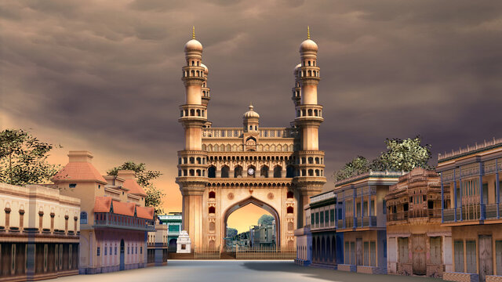

Hyderabad



Hyderabad, the capital of Telangana, is a major Indian metropolis known as the "City of Pearls" and a vibrant
hub for technology, pharmaceuticals, and history. Founded in 1591, it perfectly blends Nizami
heritage—exemplified by the Charminar and Golconda Fort—with modern infrastructure, including the HITEC City IT
hub and diverse, popular cuisine like Hyderabadi Biryani.